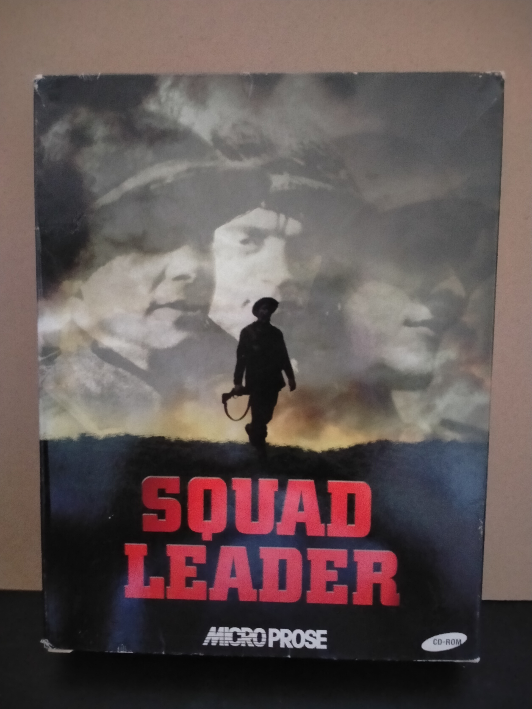

Ficha #000000
Avalon Hill's Squad Leader
Squad Leader es un wargame táctico para PC publicado en el año 2000 bajo el sello MicroProse/Hasbro Interactive y desarrollado por Random Games, inspirado en el histórico juego de tablero Squad Leader de Avalon Hill. Traslada al ordenador la escala de combate de pelotón de la Segunda Guerra Mundial, centrada en liderazgo, moral, posicionamiento, fuego de cobertura y coordinación de pequeñas unidades. La propuesta se articula alrededor de campañas basadas en escenarios históricos como la invasión de Normandía, la batalla de las Ardenas y Arnhem, combinando turnos, gestión de soldados individuales, habilidades, experiencia y decisiones tácticas de corto alcance. Esta edición española en caja grande para PC CD-ROM, distribuida por Proein, conserva especial interés documental por representar una etapa tardía de MicroProse en el wargame de sobremesa digitalizado, cuando el mercado de PC intentaba adaptar licencias clásicas de tablero a interfaces Windows más accesibles sin abandonar la profundidad estratégica.
- Formato
- Big Box
- Plataforma
- Win95 Win98
- Género
- Estrategia por turnos Táctica por turnos Wargame Simulación bélica Estrategia histórica
- Serie
- Todos Big Box
- Desarrollador
- Random Games
- Distribuidor
- Hasbro Interactive, MicroProse, Proein
- EAN
- 5023117570285
Contenido de la edición
- Caja Big Box
- Manual
- CD-ROM en caja jewel case
Preservación
- Protección
- No determinado
- Formato recomendado
- BIN/CUE
- Jugable en virtualización
- Sí
Edición en CD-ROM. Para preservación se recomienda realizar imagen completa del disco en formato BIN/CUE o ISO, conservar escaneos del manual y documentar la edición española distribuida por Proein. No se ha identificado de forma concluyente un sistema anticopia concreto a partir de la edición mostrada, por lo que conviene verificar si requiere presencia del CD durante instalación o ejecución.